9.1.4 Interposer D1 安装 
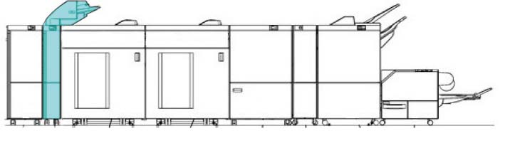
(图 1) ffw910009

Dock the 下方 模块 of IOT, CDM, or IFM 安装前 the Interposer Feeder 单元 (weight 大约. 7kg) to prevent toppling.
产品代码
Interposer D1 : QD200139 [Apeos C8180G, ApeosPro C810G, Revoria 按下 PC1120, Revoria 按下 E1136G, Apeos 7580G, Revoria 按下 EC1100, Revoria 按下 SC180G]
LM100083 (FB 设置 代码) [Apeos 7580G 装订器 D6 (没有 小册子)]
LM100083 (FB 设置 代码) [Apeos 7580G 装订器 D6 (和/与 小册子)]
安装步骤
打开 the package 该 comes 使用 Interposer 和 检查 bundled/separate order items.
Interposer 随附物品
编号
名称
数量
1
Earth 板
2
2
电源线 Protector 支架
1
3
对接 板
1
4
螺钉(M4x6)
8
5
螺钉 (用于 ...的安装 对接 板 (M4x6))
2
6
电源线 (选件)
1
7
线束 盖板
1
8
锁定 支架
1
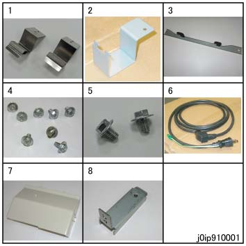
(图 2) ip910001
关闭IOT主机和打印服务器, 拔掉电源.

用于 如何 to 关闭电源, 请参阅 the 维修 手册 用于 IOT 和 打印服务器.
设置 Bar 用于 topple prevention.
松开螺钉 (x2).
设置 Bar 和 拧紧螺钉 (x2).
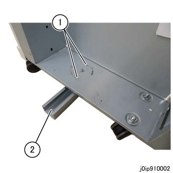
(图 3) ip910002
拆卸 Interposer packaging tape.
打开 the 前面 门 和 拆卸 securing tape of 滑槽.
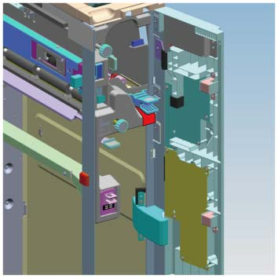
(图 4) ipw910001
拆卸后下盖板 的 Interposer.
拆卸螺钉（x4）.
拆卸后下盖板.
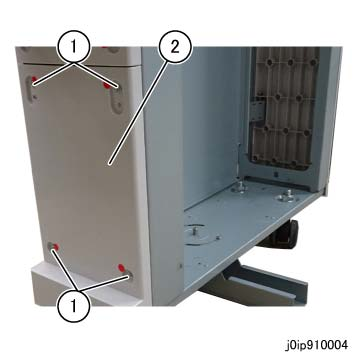
(图 5) ip910004
安装 Earth Plates 到 Interposer.
安装 Earth 板 (x2).
固定 it by using 螺钉 (M4x6: x2) provided in the bundle.
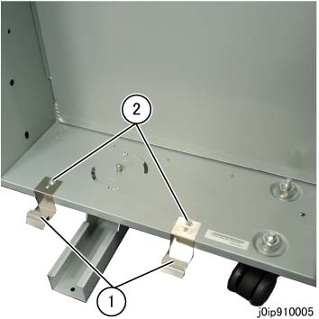
(图 6) ip910005
安装 锁定 支架 到 Interposer.
固定 the 锁定 支架 和/与 螺钉 (M4x6) provided in the bundle.
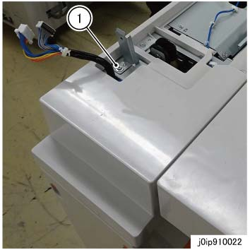
(图 7) ip910022
安装 对接 板 到 上游 模块.
安装 对接 板.
固定 the 对接 板 by using 螺钉 (M4x6: x2).
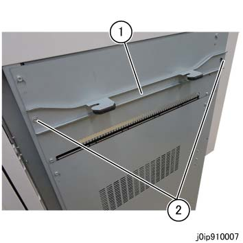
(图 8) ip910007
If you want to dock the Interposer directly to IOT, 执行 以下 procedures. (Revoria 按下 E1136G 仅)
对齐 sponge (短路) bundled 使用 IOT 使用 mark 和 安装 it to IOT.
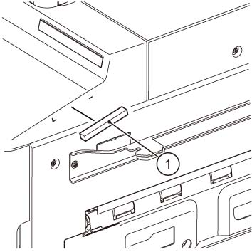
(图 9) cd910021
If you want to dock the Interposer directly to IOT, 执行 以下 procedures. (Revoria 按下 E1136G, Apeos 7580G)
对齐 纸张 (bundled 使用 IOT) 使用 R 边缘 的 纸张 metal 和 安装 it. (Revoria 按下 E1136G 仅)
对齐 纸张 (bundled 和/与 装订器 安装 Kit) 使用 R 边缘 的 纸张 metal 和 安装 it. (Apeos 7580G 仅)
对齐 sponge (bundled 使用 IOT) 使用 纸张 和 安装 it. (Revoria 按下 E1136G 仅)
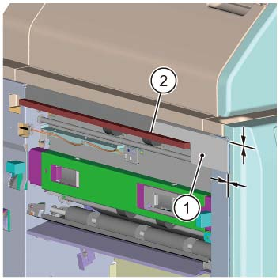
(图 10) ip910027
安装 出纸 板 (bundled 和/与 装订器 安装 Kit) 和/与 螺钉 (M3x6) (x2). (Apeos 7580G)
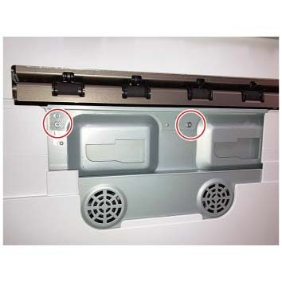
(图 11) fgc910116
Temporarily 拆卸螺钉 该 secures the Latch Stopper 的 Interposer.
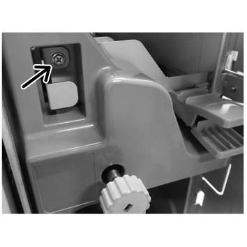
(图 12) ipw910002
对齐 hooks 的 上游 模块 对接 板 到 对接 slots 的 Interposer 和 push it in 直到 they 锁定.
Visually 确认 the gasket 的 Earth 板 seals properly 和/与 编号 gap.
If 那里 is 任何 gap in the Earth 板 和 it 不 seal properly, or 如果 hooks of IOT 对接 板 请勿 match the 高度 的 对接 slots 的 Interposer, 执行 步骤 21 to 调整 高度 的 Interposer Caster.
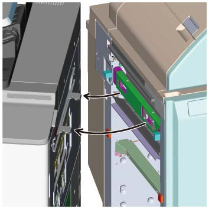
(图 13) ip910028
拆卸 LH 下方 盖板 的 Interposer Feeder 单元.
打开 盖板 和 拆卸螺钉（x2）.
拆卸盖板.
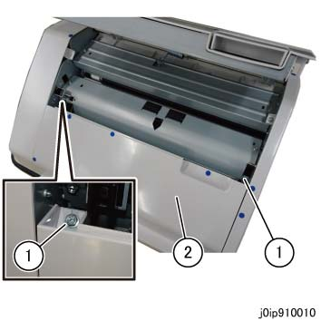
(图 14) ip910010
拆卸前盖板 的 Interposer Feeder 单元.
拆卸螺钉（x3）.
拆卸前盖板.
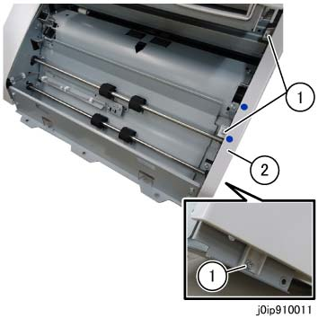
(图 15) ip910011
安装 Interposer Feeder 单元.
The weight 的 Interposer Feeder 单元 is approximately 7 kg.
对齐 和 place the Interposer Feeder 单元 在...上 2 studs.
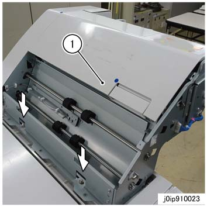
(图 16) ip910023
固定 左侧 和/与 螺钉 (M4x6: x3).
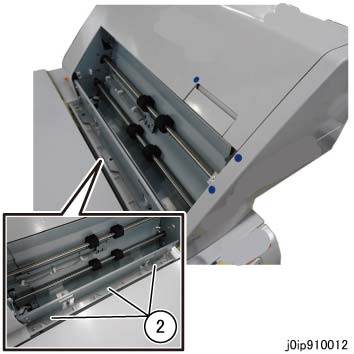
(图 17) ip910012
固定 the 前面 和/与 螺钉 (M4x6).
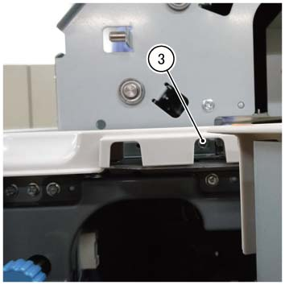
(图 18) ipw910003
固定 the 后面 和/与 螺钉 (M4x6).
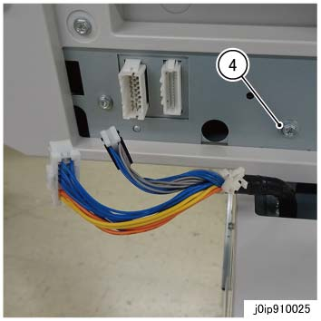
(图 19) ip910025
连接连接器.
连接连接器（x2）.
固定 卡箍.
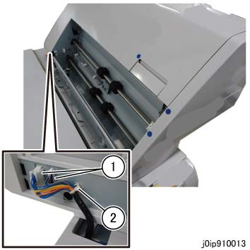
(图 20) ip910013
安装 线束 盖板.
安装 线束 盖板.
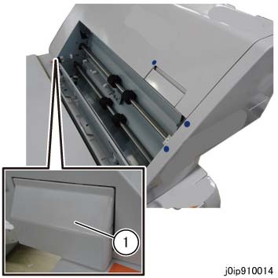
(图 21) ip910014
Reinstall 盖板 的 Interposer Feeder 单元.
Use the provided wrench to 调整 高度 的 Interposer Caster as 所需的.
拆卸螺钉 at the CDM to extract the wrench.
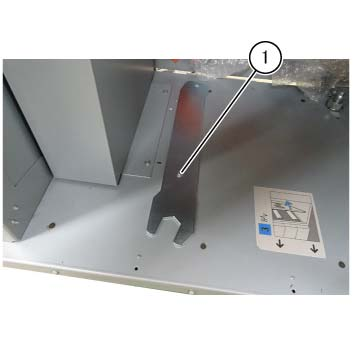
(图 22) ipw910004
前面 Caster.
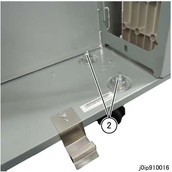
(图 23) ip910016
后面 Caster.
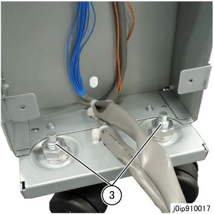
(图 24) ip910017
Use the wrench to 松开 the Securing 螺母.
Use the wrench to 转动 Hexagonal 螺栓 和 调整 高度.
转动 hexagonal 螺栓 using the provided wrench.

(图 25) ifm910011
如果 is difficult to work 使用 provided wrench, use the ratchet wrench.
Use the wrench to 拧紧 the Securing 螺母.

(图 26) ip910018
固定 the Latch Stopper by using 螺钉.
(图 27) ipw910002
连接 Interposer 连接器 到 CDM.
如果 CDM 不是 installed, 连接 Interposer 连接器 到 Downstream 模块.
断开 Cheat 连接器 和 store it.
连接连接器（x2） to P8067, P8066.
固定 the 导线 by using the Snap Hook.
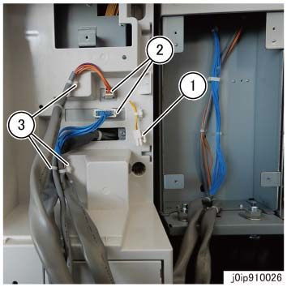
(图 30) ip910026
安装 后面 下方 盖板 的 Interposer.
安装 后面 下方 盖板.
固定 the 后面 下方 盖板 by using 螺钉（x4）.
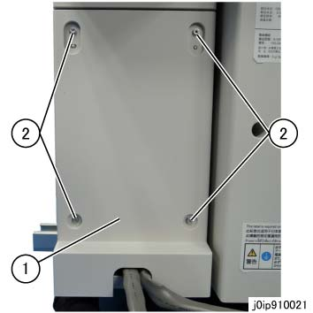
(图 31) ip910021
打开 IOT.
检查 操作 的 Interposer.
检查 状态 of 纸张 传输, 用于 异常 噪音, 和 等.
确认 纸张 不 get 卡住的, torn, contaminated, folded, or creased.
[在...期间 长 纸张 support]: If 错误 occurs, 执行 Steps 28 to 31.
[在...期间 长 纸张 support]: 关闭 IOT 电源.
[在...期间 长 纸张 support]: 释放 对接.
[在...期间 长 纸张 support]: 调整 对接 调整 板.
松开螺钉 在后面.
拆卸螺钉 在前面, 和 reposition it 到 长 hole.
调整 对接 调整 板.
纸张 不对齐 方向
移动 方向 of 调整 板
前面 方向
前面 方向 (a)
后面 方向
后面 方向 (b)
固定 the 螺钉（x2）.

(图 32) ff910046
[在...期间 长 纸张 support]: Dock 再次 和 repeat 从 步骤 26.